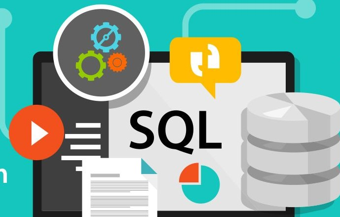

Develop a passion for learning.

SQL (Structured Query Language):
SQL, often pronounced as "sequel," is a standard programming language designed for managing and
manipulating
data in relational database management systems (RDBMS). It provides a set of commands for performing
tasks
such as querying data, updating data, inserting new records, and deleting records from a database.
SQL is
used to interact with databases to retrieve and manipulate data stored in tables.
If you want to learn My SQL and PL/SQL in detail then click on the button given below.